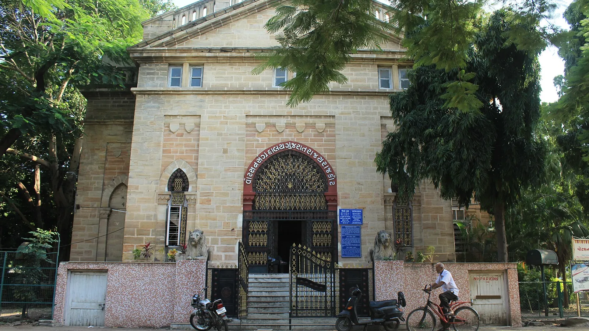
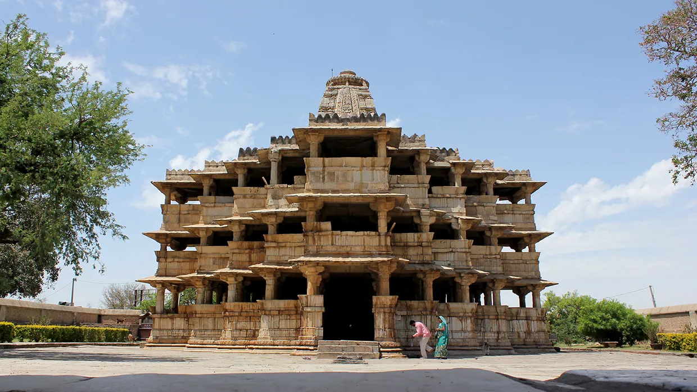
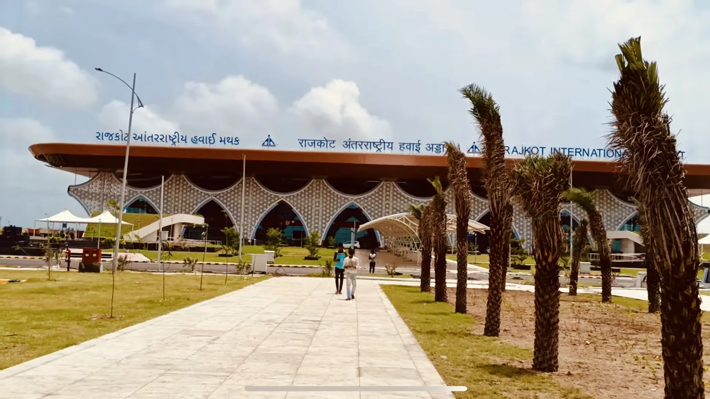
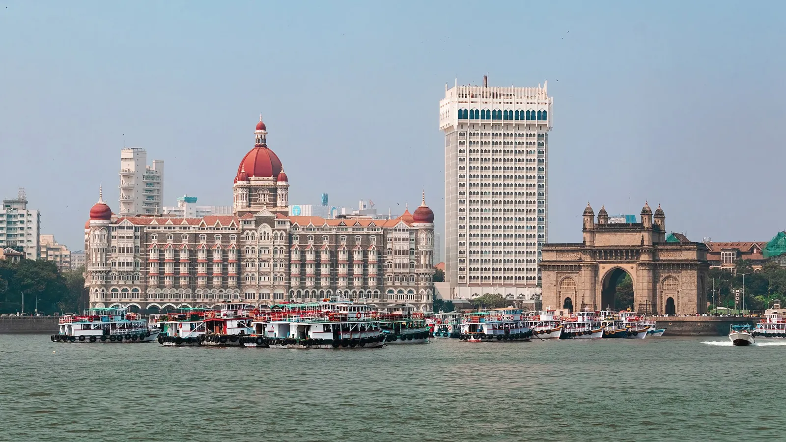
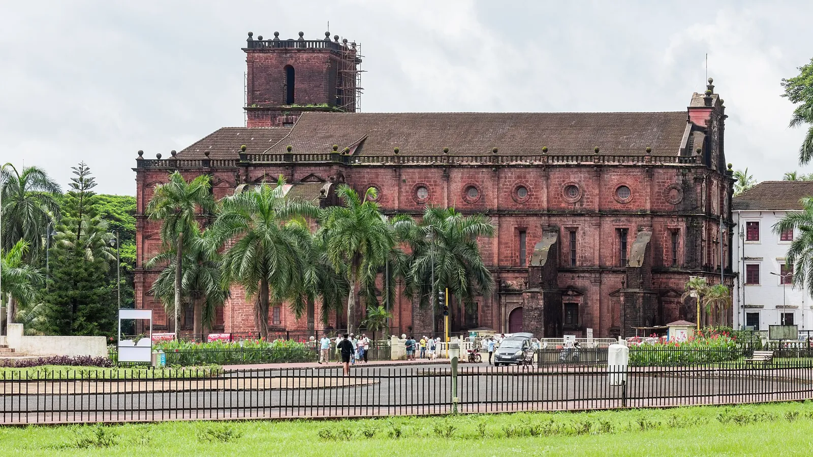
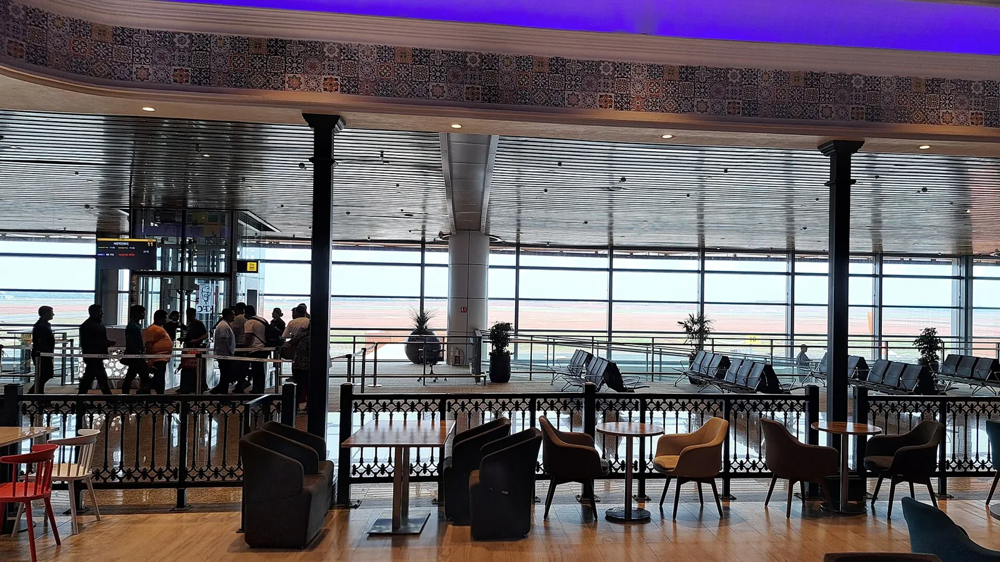
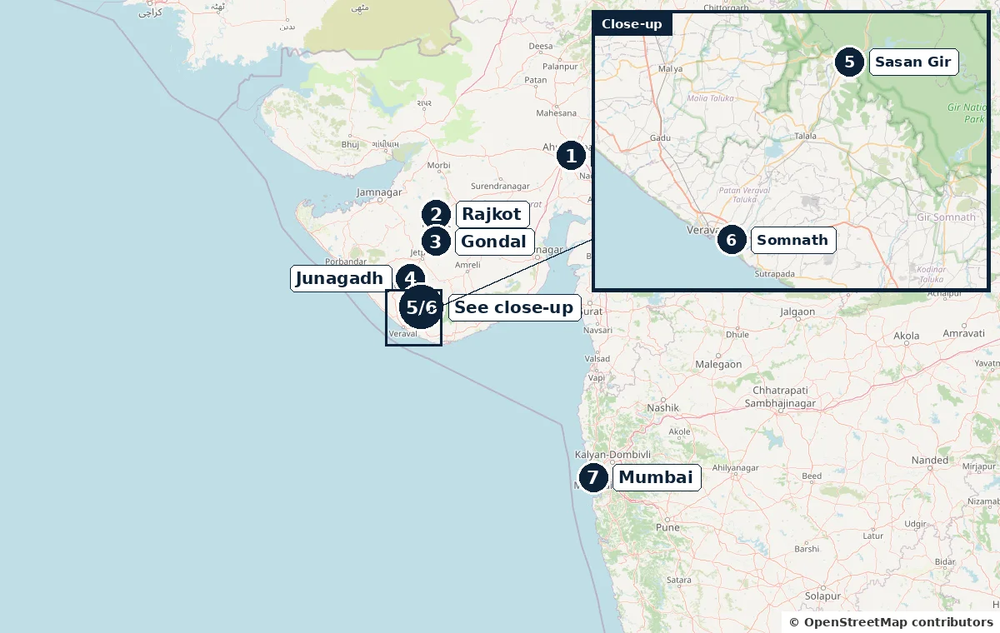

Gujarat's heritage and lions, the energy of Mumbai and a beach to finish. This itinerary is built from our nights-per-place outline; the day plans, timings and changes are ours. The outline gave two nights for the Rajkot to Mumbai 'travel day'. A one-hour flight from Rajkot covers it, so we gave those nights to Rajkot and Goa instead.
See it for yourself
Photos from the journey












Where you go
The journey on one map

AhmedabadRajkotGondalJunagadhSasan GirSomnathRajkotMumbaiGoa
Day by day, in short
Daily travel brief
Distances are by road for the whole day. The full plan with timings comes with your detailed itinerary.
-
1
Arrive in Ahmedabad
- Manek Chowk's night food square is open from about 20:00.
-
2
Old Ahmedabad and Gandhi's ashram
- Gujarat is a dry state; hotels issue liquor permits to visitors.
-
3
To Rajkot
- Watson Museum is closed on Wednesdays.
- Rajkot shops close for an afternoon rest.
-
4
Gondal's palaces and Virpur
- A Kathiyawadi dinner tonight.
-
5
Girnar and on to Sasan Gir
- Girnar ropeway: stops in high wind.
- Gir safari permits are booked online in your ID name.
-
6
Lions of Gir
- Gir jeep safari: the park is closed from 16 June to 15 October.
- Wear earth colours on safari.
-
7
Somnath on the sea
- Somnath temple: phones and bags in lockers.
- Back to Sasan for the night.
-
8
Fly from Rajkot to Mumbai
- This flight replaces the outline's two-night travel day.
-
9
South Mumbai
Chhatrapati Shivaji Maharaj Terminus
- Mumbai traffic peaks 09:00 to 11:00 and 17:00 to 20:00.
-
10
Elephanta Caves by ferry, then Juhu
- Ferry to Elephanta: the caves are closed on Mondays.
- Elephanta Caves with a guide: monkeys snatch food and bags on the steps.
-
11
Fly to Goa
- South Goa is quieter, North Goa livelier.
-
12
Old Goa and Panaji
- Old Goa churches: cover shoulders and knees.
- A Mandovi river sunset cruise is a fun extra.
-
13
Fly home from Goa
- Transfer to the airport: leave 4 hours before an international flight and 3 before a domestic one.
- Pack liquids and souvenirs in checked baggage.
Local know-how
Travel hacks from our desk
UPI, cards and cash
UPI works almost everywhere, even at small stalls. Keep some cash in INR 100 and 200 notes for temples, parking, tips and places where the network is weak.
Temple and shrine etiquette
Cover shoulders and knees. Remove shoes where asked, and carry socks for hot stone floors. Leather belts and bags are not allowed inside some Jain and Hindu temples. Ask before photographing people and inside shrines.
Water and street food
Drink sealed bottled or filtered water only. Choose busy stalls where food is cooked in front of you, and skip cut fruit and ice from roadside stalls.
Driving times
Indian roads are slower than the kilometres suggest: plan on 40 to 50 km an hour on highways and much less in hills and towns. Your driver's breaks and meal stops are built into the timings.
Plugs and tipping
Plugs are Indian three-pin and two-pin, 230 volts. Tipping drivers and guides about INR 300 to 500 a day is appreciated.
When to go
Best time to visit for this journey
February: lions, cool mornings and quiet beaches.
November to March: Gir is open, Mumbai is dry and Goa's seas are calm.
The package
What's included
Included
- Hotels as listed with breakfast
- Private air-conditioned car with driver for all transfers and sightseeing
- 24/7 support from Blue Diamond Voyage
- Two Gir safaris
- Flights Rajkot to Mumbai and Mumbai to Goa (economy)
Not included
- Flights and trains not listed as included
- Entry fees, guides, boats and activities
- Lunches and dinners unless stated
- Travel insurance
The detailed itinerary
Some journeys are planned. Ours are crafted.
The full 13-day plan is ready: hour-by-hour timings, drive times, temple dress codes, food for your diet and a route map for every day. Tell us your dates and your city, and we'll send it to you on WhatsApp, shaped around you.
- Hour-by-hour timings
- A route map for every day
- Hotel and room details
- Visa and entry steps
- Vegetarian and Jain dining
24/7 travel desk+91 97148 59797+91 98242 21400
Photo and map credits
- Sardar Vallabhbhai Patel International Airport: Apurba Biswas, CC0, via Wikimedia Commons
- Sabarmati Ashram: Snehrashmi, CC BY-SA 4.0, via Wikimedia Commons
- Watson Museum: Sneha N Shetty, CC BY-SA 4.0, via Wikimedia Commons
- Naulakha Palace Gondal: Bernard Gagnon, CC BY-SA 3.0, via Wikimedia Commons
- Girnar Ropeway: Piyush Jnd, CC BY-SA 4.0, via Wikimedia Commons
- Somnath Temple: Hritiksharma, CC BY-SA 4.0, via Wikimedia Commons
- Rajkot International Airport Hirasar: HJMEHTA2110, CC0, via Wikimedia Commons
- Gateway of India: iMahesh, CC BY-SA 4.0, via Wikimedia Commons
- Gateway of India: iMahesh, CC BY-SA 4.0, via Wikimedia Commons
- Manohar International Airport: Arunpnair 787, CC BY-SA 4.0, via Wikimedia Commons
- Basilica of Bom Jesus: iMahesh, CC BY-SA 4.0, via Wikimedia Commons
- Manohar International Airport: Arunpnair 787, CC BY-SA 4.0, via Wikimedia Commons
- Maps: © OpenStreetMap contributors; road routes by OSRM.